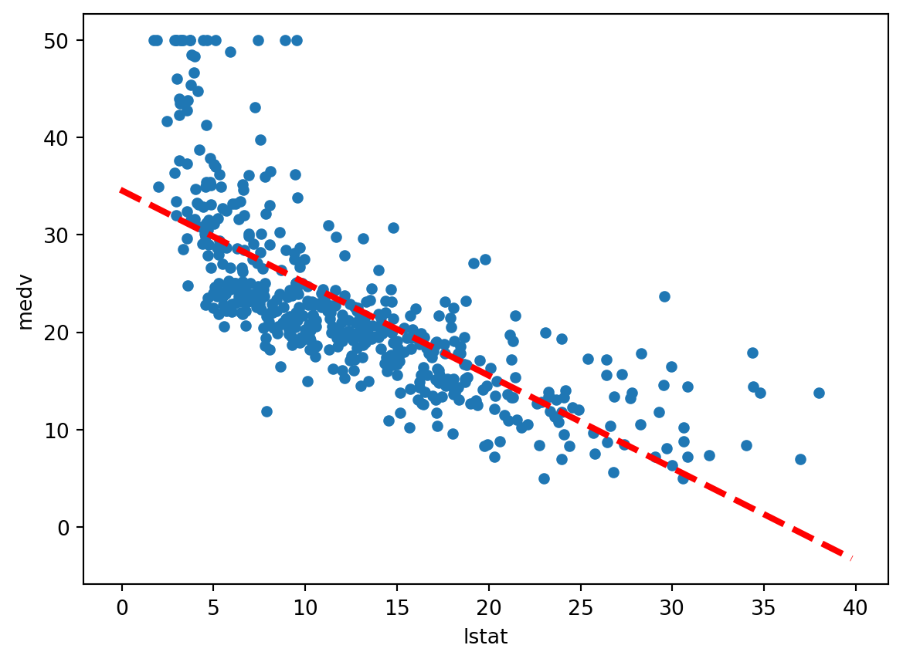
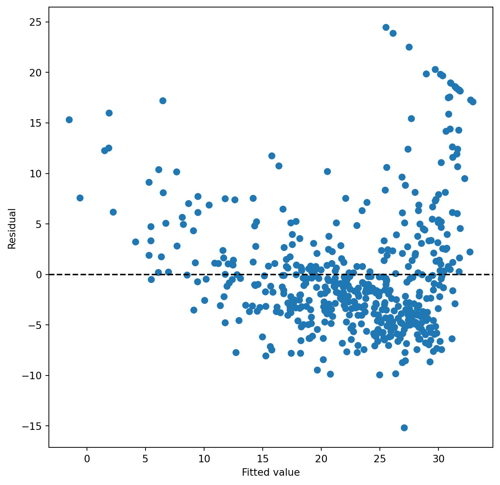
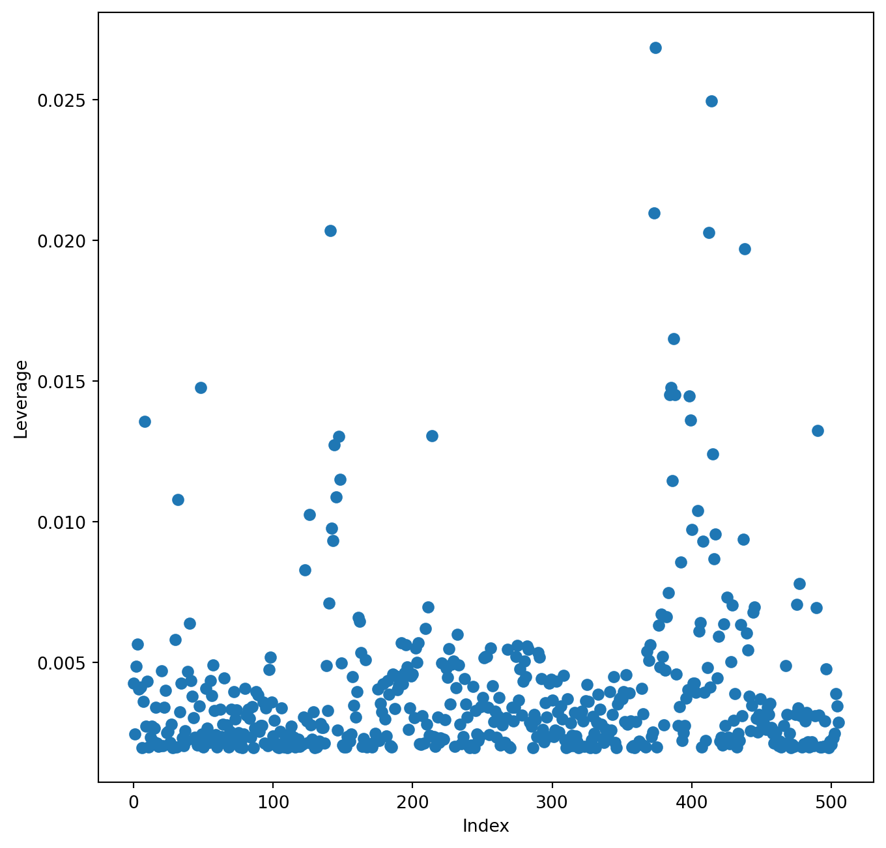

import numpy as np
import pandas as pd
from matplotlib.pyplot import subplots
import statsmodels.api as sm
from statsmodels.stats.outliers_influence import variance_inflation_factor as VIF
from statsmodels.stats.anova import anova_lm
from ISLP import load_data
from ISLP.models import (ModelSpec as MS, summarize, poly)Ejemplo de regresión múltiple con Python
exploraciones
Pequeña práctica de regresión múltiple con Python, siguiendo ISLP
Aquí sigo un ejercicio de regresión lineal con Python del libro Introduction to Statistical Learning with Python.
Regresión simple
Código del ajuste del modelo
boston = load_data('Boston')
boston.head()| crim | zn | indus | chas | nox | rm | age | dis | rad | tax | ptratio | lstat | medv | |
|---|---|---|---|---|---|---|---|---|---|---|---|---|---|
| 0 | 0.00632 | 18.0 | 2.31 | 0 | 0.538 | 6.575 | 65.2 | 4.0900 | 1 | 296 | 15.3 | 4.98 | 24.0 |
| 1 | 0.02731 | 0.0 | 7.07 | 0 | 0.469 | 6.421 | 78.9 | 4.9671 | 2 | 242 | 17.8 | 9.14 | 21.6 |
| 2 | 0.02729 | 0.0 | 7.07 | 0 | 0.469 | 7.185 | 61.1 | 4.9671 | 2 | 242 | 17.8 | 4.03 | 34.7 |
| 3 | 0.03237 | 0.0 | 2.18 | 0 | 0.458 | 6.998 | 45.8 | 6.0622 | 3 | 222 | 18.7 | 2.94 | 33.4 |
| 4 | 0.06905 | 0.0 | 2.18 | 0 | 0.458 | 7.147 | 54.2 | 6.0622 | 3 | 222 | 18.7 | 5.33 | 36.2 |
Estos datos son un clásico, que incluso han tenido ya haters por no sé qué variable que hace al conjunto racista. Pero yo voy a seguir con el ejemplo de ISLP porque no me quiero complicar ahora.
El libro ajusta una regresión lineal de 'medv' frente a 'lstat'. Por supuesto, ni idea de qué es cada una. Pero solo quier practicar código Python; el resultado nos da igual.
X = pd.DataFrame({'intercept': np.ones(boston.shape[0]),
'lstat': boston['lstat']})
X.head() | intercept | lstat | |
|---|---|---|
| 0 | 1.0 | 4.98 |
| 1 | 1.0 | 9.14 |
| 2 | 1.0 | 4.03 |
| 3 | 1.0 | 2.94 |
| 4 | 1.0 | 5.33 |
En statsmodels el intercept no se incluye por defecto y es el usuario quien tiene que incluirlo.
y = boston['medv']
model = sm.OLS(y, X)
results = model.fit()
results.summary()| Dep. Variable: | medv | R-squared: | 0.544 |
| Model: | OLS | Adj. R-squared: | 0.543 |
| Method: | Least Squares | F-statistic: | 601.6 |
| Date: | Mon, 14 Oct 2024 | Prob (F-statistic): | 5.08e-88 |
| Time: | 11:25:22 | Log-Likelihood: | -1641.5 |
| No. Observations: | 506 | AIC: | 3287. |
| Df Residuals: | 504 | BIC: | 3295. |
| Df Model: | 1 | ||
| Covariance Type: | nonrobust |
| coef | std err | t | P>|t| | [0.025 | 0.975] | |
| intercept | 34.5538 | 0.563 | 61.415 | 0.000 | 33.448 | 35.659 |
| lstat | -0.9500 | 0.039 | -24.528 | 0.000 | -1.026 | -0.874 |
| Omnibus: | 137.043 | Durbin-Watson: | 0.892 |
| Prob(Omnibus): | 0.000 | Jarque-Bera (JB): | 291.373 |
| Skew: | 1.453 | Prob(JB): | 5.36e-64 |
| Kurtosis: | 5.319 | Cond. No. | 29.7 |
Notes:
[1] Standard Errors assume that the covariance matrix of the errors is correctly specified.
Una forma más generalizable de preparar los datos es con la función MS(), que funciona al estilo sklearn. Pero es algo propio del libro así que no sé si le haré mucho caso.
design = MS(['lstat'])
design = design.fit(boston)
X = design.transform(boston)
X.head()| intercept | lstat | |
|---|---|---|
| 0 | 1.0 | 4.98 |
| 1 | 1.0 | 9.14 |
| 2 | 1.0 | 4.03 |
| 3 | 1.0 | 2.94 |
| 4 | 1.0 | 5.33 |
También se puede acortar con fit_transform().
A partir del modelo, guardado en results, y un conjunto de datos, puedes obtener predicciones.
new_df = pd.DataFrame({'lstat': [5, 10, 15]})
newX = design.transform(new_df)
newX| intercept | lstat | |
|---|---|---|
| 0 | 1.0 | 5 |
| 1 | 1.0 | 10 |
| 2 | 1.0 | 15 |
Y ahora predices:
new_predictions = results.get_prediction(newX)
new_predictions.conf_int(alpha=0.95)array([[29.7781697 , 29.82901852],
[25.03485131, 25.07184337],
[20.28485052, 20.32135063]])Gráfico
El primer gráfico muestra la regresión calculada.
def abline(ax, b, m, *args, **kwargs):
"Add a line with slope m and intercept b to ax"
xlim = ax.get_xlim()
ylim = [m * xlim[0] + b, m * xlim[1] + b]
ax.plot(xlim, ylim, *args, **kwargs)
ax = boston.plot.scatter('lstat', 'medv')
abline(ax,
results.params[0],
results.params[1],
'r--',
linewidth=3)
El segundo gráfico compara los residuos frente a los valores ajustados.
Parece que los valores ajustados más pequeños están asociados a residuos negativos y altos. En valores más altos de ajuste, hay residuos tanto positivos como negativos, pero se concentran muchos más en casos negativos.
ax = subplots(figsize=(8,8))[1]
ax.scatter(results.fittedvalues, results.resid)
ax.set_xlabel('Fitted value')
ax.set_ylabel('Residual')
ax.axhline(0, c='k', ls= '--')
El leverage es una métrica que indica cuánto se aleja un punto del centroide de toda la nube de puntos. Puntos muy alejados tendrán una mayor influencia en el cálculo del coeficiente que puntos cercanos.
El gráfico muestra el leverage contra el índice del punto, lo que ayuda a identificar puntos más influyentes (en el caso de una serie temporal, se podría ver como una evolución).
infl = results.get_influence()
ax = subplots(figsize=(8,8))[1]
ax.scatter(np.arange(X.shape[0]), infl.hat_matrix_diag)
ax.set_xlabel('Index')
ax.set_ylabel('Leverage')
np.argmax(infl.hat_matrix_diag)374
Regresión múltiple
Ahora enfrentan 'medv' a 'lstat' y 'age'.
X = MS(['lstat', 'age']).fit_transform(boston)
model1 = sm.OLS(y, X)
results1 = model1.fit()
results1.summary()| Dep. Variable: | medv | R-squared: | 0.551 |
| Model: | OLS | Adj. R-squared: | 0.549 |
| Method: | Least Squares | F-statistic: | 309.0 |
| Date: | Mon, 14 Oct 2024 | Prob (F-statistic): | 2.98e-88 |
| Time: | 11:25:23 | Log-Likelihood: | -1637.5 |
| No. Observations: | 506 | AIC: | 3281. |
| Df Residuals: | 503 | BIC: | 3294. |
| Df Model: | 2 | ||
| Covariance Type: | nonrobust |
| coef | std err | t | P>|t| | [0.025 | 0.975] | |
| intercept | 33.2228 | 0.731 | 45.458 | 0.000 | 31.787 | 34.659 |
| lstat | -1.0321 | 0.048 | -21.416 | 0.000 | -1.127 | -0.937 |
| age | 0.0345 | 0.012 | 2.826 | 0.005 | 0.011 | 0.059 |
| Omnibus: | 124.288 | Durbin-Watson: | 0.945 |
| Prob(Omnibus): | 0.000 | Jarque-Bera (JB): | 244.026 |
| Skew: | 1.362 | Prob(JB): | 1.02e-53 |
| Kurtosis: | 5.038 | Cond. No. | 201. |
Notes:
[1] Standard Errors assume that the covariance matrix of the errors is correctly specified.